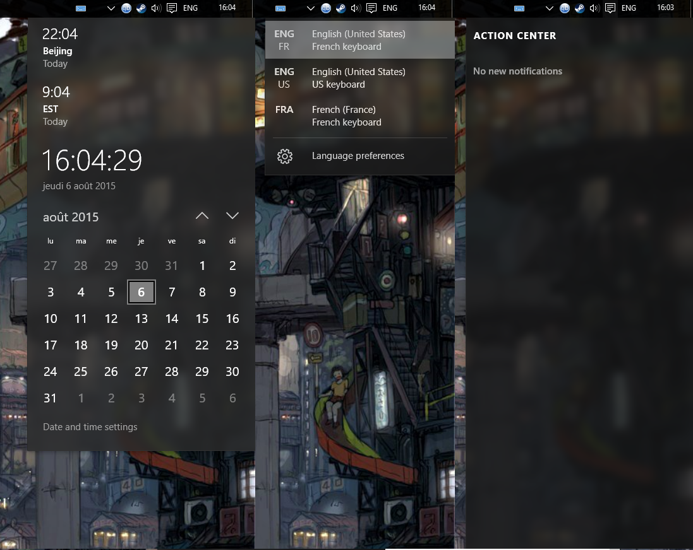
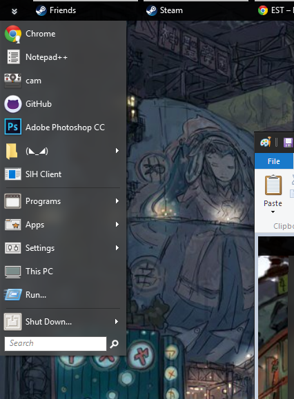

hello there, i can't find any skin in the database which match with win10 blur design
do you know if there are a skin somewhere which have this blur backgound and flat :

i actually use the built-in skin "Metro" which is almost perfect for me except that the blur/color being different

thanks you in advance
*EDIT, i've tweaked the setting "glass transparency" and it look a bit more like windows, but the setting "overdrive glass color" seem to not work